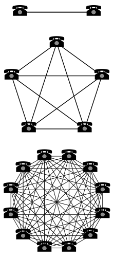

Links [1/2]
To navigate this slide deck:
Use cursor keys or click on arrows on bottom right.
Use Esc key to toggle overview
Teamwork makes the dreamwork
Are you good at teamwork?
What does good teamwork mean to you?
Software development is a team sport
- Code is written by many people (and robots)
- Code is reviewed
- Integration can be hard
- Ideas need to be shared, problems solved, decisions made
- Cross-functional communication
Can we engineer
"Good Teamwork"
from first principles?
Hi, I'm Sheena
- Coding since young teen
- Worked in a lot of startups
-
Spent the last 5+ years in tech education
- has potential => has career
- spoken to a LOT of hiring companies
- science of ed => engineering
of ed
- PyCon Africa 2025 Chair
- Founded Guild of Educators
- Founded Prelude - Gold standard learning experiences
What is a good team player?
A good team-player
Passes the ball
Skilfully!
== Set the next person up for success
Examples of "ball passing" in software dev?
Let's zoom in on PRs
- Make a PR skilfully
- Give feedback skilfully
- Apply feedback skilfully
Coordination is a part of the game

Coordination mechanisms
- Meetings
- Written communication
- Project management tools
Communication is Key
- Share information skilfully
- Absorb information skilfully
Principles over Process
- Avoid "box-checking" behavior
- Avoid "That's just how we do it"
- Rather: Be aware of the reasons for things
- Handle edge cases and gray areas
Help and status
- Share your status - skilfully
- Ask for help - skilfully
- Receive help - skilfully
Diversity matters

Google's Project Aristotle
- 180 Teams
- Over 250 survey questions
- Hundreds of double-blind interviews
- 35 different statistical models
Looked for factors that
- impacted multiple outcome metrics, both qualitative and quantitative
- surfaced for different kinds of teams across the organization
- showed consistent, robust statistical significance
And the winner is...
Psychological Safety
If I make a mistake on our team, it is not held against
me.
Psychological Safety
- Safe to suggest and challenge ideas
- Safe to try new things
- Safe to ask for/offer help
- Safe to say no
How to be a good team player?
- Principles-first approach
- Cater for diversity
- Treasure psychological safety
To err is human
- Habits of awareness and action
- Rational biases
- Ego + Limiting beliefs
- Baggage